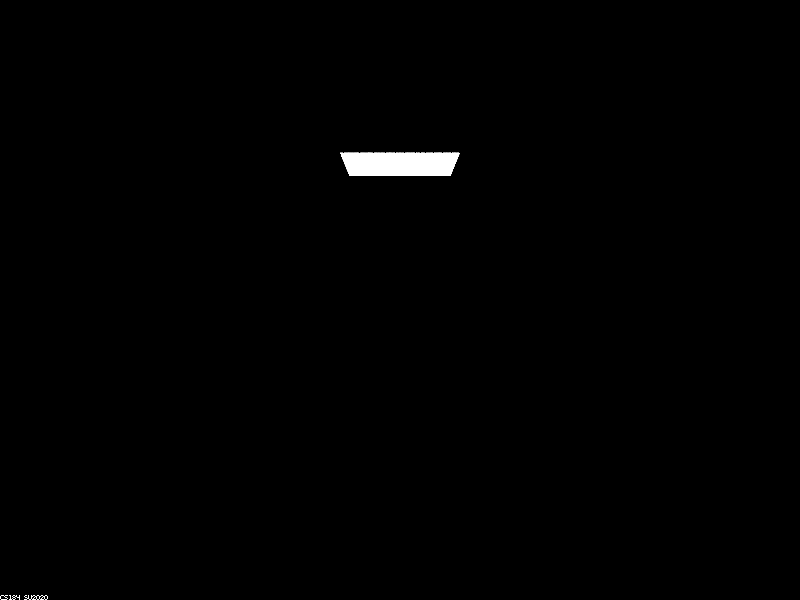
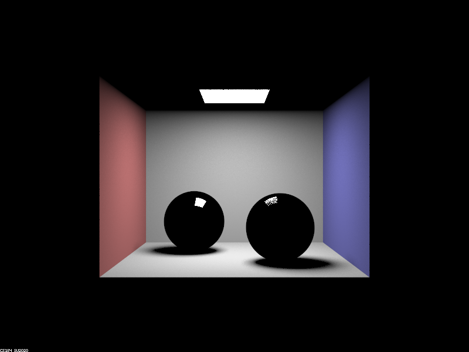
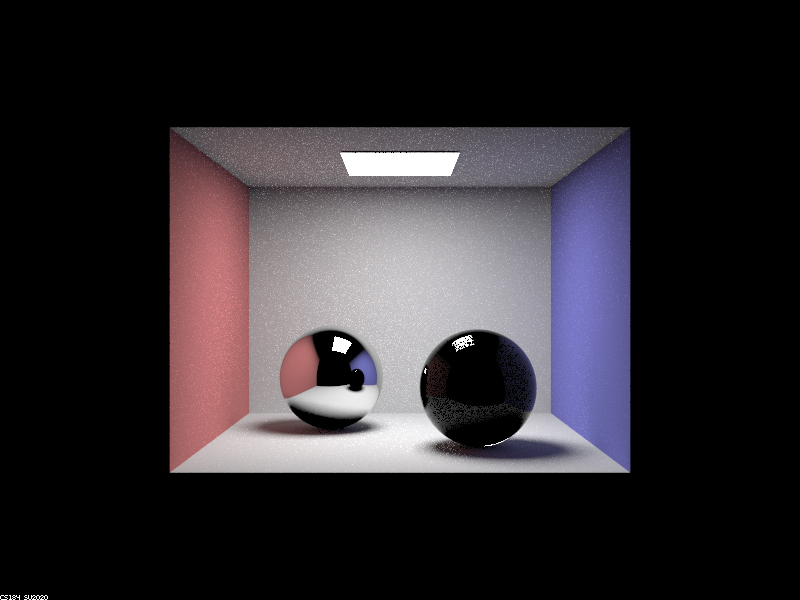
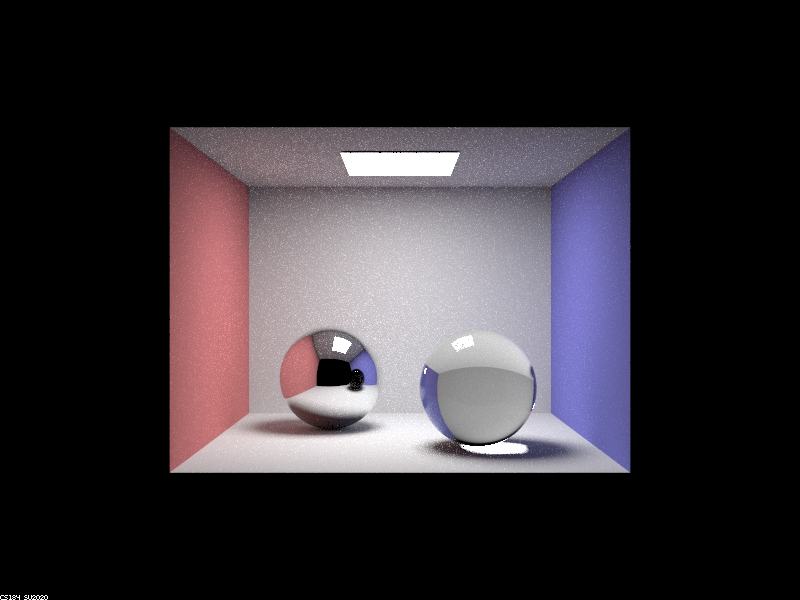
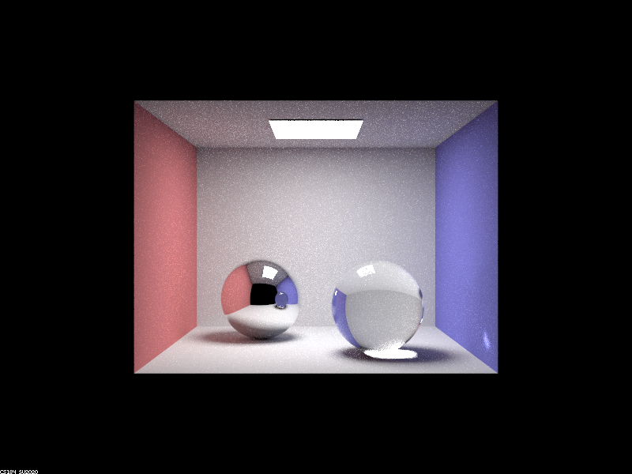
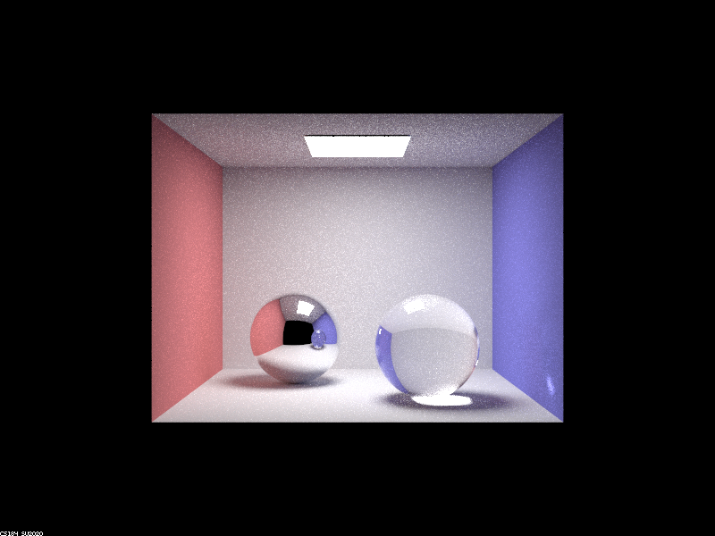

Overview
In this project we implemented a few features to upgrade our existing raytracer (Project 3-1). We chose to add reflective and refractive materials (part 1), and depth of field (part 4). This allowed us to generate even more realistic looking images by simulating different camera lenses and different materials, and in a greater variety of formats compared to the original raytracer.
Part 1. Mirror and Glass Materials
Show a sequence of six images of scene `CBspheres.dae` rendered with `max_ray_depth` set to 0, 1, 2, 3, 4, 5, and 100. The other settings should be at least 64 samples per pixel and 4 samples per light. Make sure to include all screenshots.
|

|

|
|

|

|
|

|
|
|

|
Point out the new multibounce effects that appear in each image.
When we make the max ray depth 0, we can only see the square light source on the ceiling, and everything else is completely dark. At 1 max ray depth, the we can see the room and the spheres now, but both spheres have a glossy, black, specular reflective look to them instead of the mirror and glass material they are supposed to have. The rest of the ceiling is still completely dark. At 2 max ray depth, we can now see the mirror surface for the ball on the left, but the glass ball on the right is still black. The rest of the ceiling is lit up now, but the reflected ceiling is still black in the mirror ball. At 3 max ray depth, the glass ball is now visibly made of glass and there is a bright spot under the glass ball, but the reflected glass ball in the mirror is still black. The reflected ceiling in the mirror ball is now lit up. At 4 max ray depth, the reflected glass ball in the mirror ball now shows up, and there is an extra bright spot on the wall next to the glass ball. At 5 max ray depth, everything looks the same, just a little brighter. At 100 max ray depth, everything looks the same, just a lot brighter.
Explain how these bounce numbers relate to the particular effects that appear. Make sure to include all screenshots.
At 0 bounces, nothing but the light source is visible because only things that directly emit light will have rays that reach the camera without bouncing. At 1 max ray depth, the room and the reflectance on the surface of the spheres is visbile, because rays of light only require 1 bounce from the light source off the object surface into the camera. At 2 max ray depth, rays can now bounce off objects onto the ceiling then onto the camera, making the ceiling lit up. The mirror surface of the ball shows up because rays of light take 1 bounce off the other object, then 1 more bounce off the mirror ball onto the camera in light source -> object -> mirror. The edges of the glass ball are visible, because those rays only intersect the glass at one point, making 2 bounces enough for light source -> object -> touch glass. At 3 max ray depth, the glass spheres is correctly rendered as the rays go light source -> object -> enter glass - > exit glass, and the reflected ceiling shows up in the mirror ball light source -> object -> ceiling -> mirror. At 4 max ray depth the spot on the right side of the wall shows up as total internel reflection occurs. At 5 max ray depth, everything looks the same but brighter, as light bounces 1 more time. At 100 max ray depth, everything looks the same, but even brighter, as light bounces 95 more times. Even though each bounce of the ray carries less light with it, it still adds up. This is an imperfection in the way we model the rays.
Part 4. Depth of Field
For these subparts, we recommend using a microfacet BSDF scene to show off the cool out of focus effects you can get with depth of field!In a few sentences, explain the differences between a pinhole camera model and a thin-lens camera model.
In this section we implemented a thin-lens camera model to render the depth of field effect.
In the original ideal pinhole camera model, everything is treated as in focus. When we switch to a
thin-lens camera model, objects are only in focus if they are at a specific distance (the focal distance)
away from the lens. This causes certain areas of the scene to be in focus, and other areas to be blurry.
To do this, we randomly sample a point on the thin lens (which has some area defined by the lens radius)
and calculate where it will intersect with the plane of focus. Because of the property that rays from the
same point on the plane of focus always focus to the same point on the image plane, we can just use the
pinhole camera model's intersection with the plane of focus as the intersection for the sampled point as well.
Show a "focus stack" where you focus at 4 visibly different depths through a scene. Make sure to include all screenshots.
Here we have different depths in focus (depending on focal distance). We see that as focal distance increases, a further back section of the dragon comes into focus.

|

|

|

|
Show a sequence of 4 pictures with visibly different aperture sizes, all focused at the same point in a scene. Make sure to include all screenshots.
Here we have different aperture sizes (depending on lens radius). We see that as aperture increases, the area of the dragon that is in focus decreases (though the front belly of the dragon is always in focus).

|

|

|

|